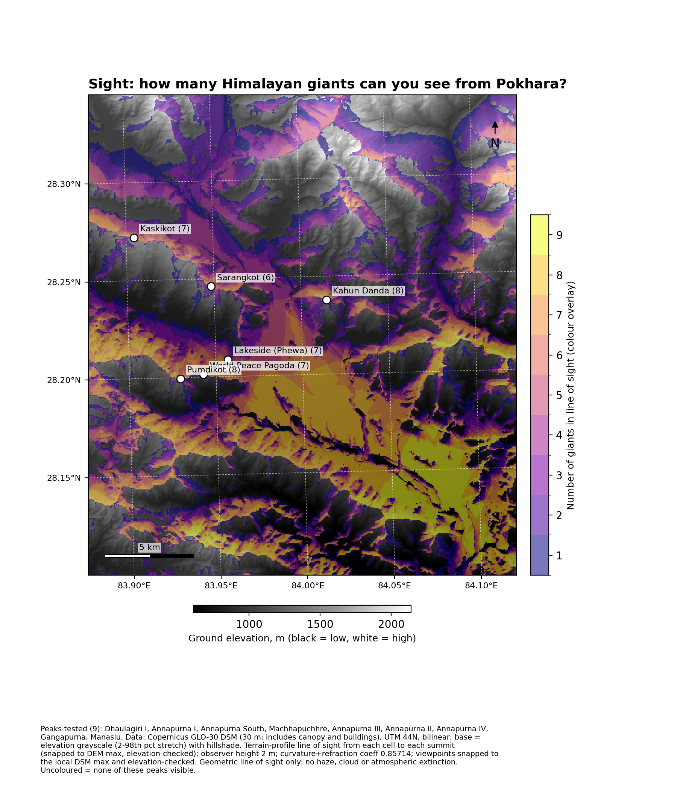
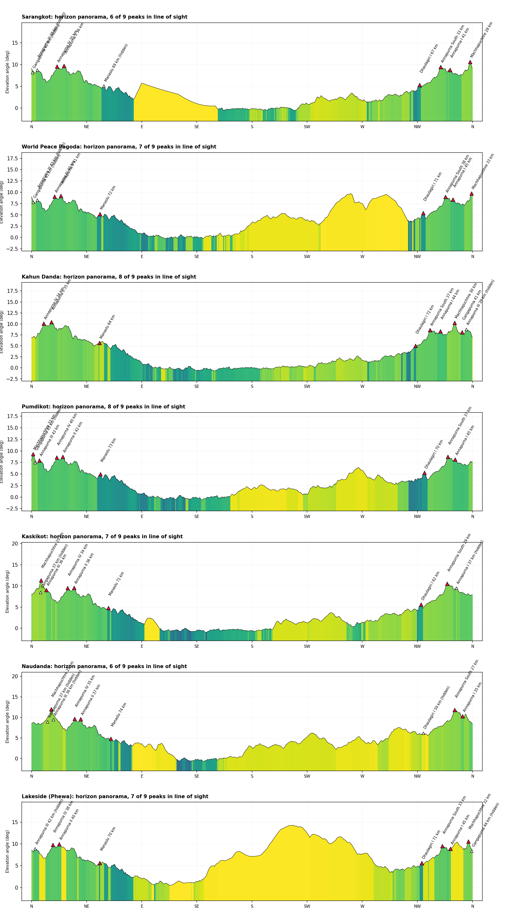

How many Himalayan giants can you see from Pokhara’s viewpoints?
A 360° sweep from seven viewpoints in the Pokhara valley, Nepal — #30DayMapChallenge 2026, Day 5: Sight
Each panel: a 75 km circle round the viewpoint, with a sweep line that lights up the ground in line of sight (cool = near, warm = far), and the panorama in the current heading with the nine giants marked (filled = visible, hollow = hidden). Panorama vertical scale exaggerated.
Giants in line of sight
Viewpoint
DEM height
Giants
Not in view
Kahun Danda
1,442 m
8 of 9
Annapurna III
Pumdikot
1,351 m
8 of 9
Gangapurna
World Peace Pagoda
1,128 m
7 of 9
Annapurna III, Gangapurna
Kaskikot
1,739 m
7 of 9
Annapurna I, Gangapurna
Lakeside (Phewa)
805 m
7 of 9
Annapurna III, Gangapurna
Sarangkot
1,577 m
6 of 9
Annapurna III, Gangapurna, Manaslu
Naudanda
1,497 m
6 of 9
Dhaulagiri I, Annapurna III, Gangapurna
The nine: Dhaulagiri I, Annapurna I, II, III, IV and South, Machhapuchhre, Gangapurna, Manaslu. Counts are geometric line of sight and can be ±1 for grazing lines (Annapurna II).
Across the valley

Giants in line of sight from every cell. The flat valley floor has a median of 7 in sight and some cells see all nine; about 58% of the window sees at least one.

Horizon panoramas from the seven viewpoints, coloured by distance to the skyline.
How it works
Data: Copernicus GLO-30 surface model (30 m, includes canopy and buildings), warped to UTM 44N.
Line of sight: terrain sampled along the straight path to each summit, with earth curvature and refraction (coefficient 0.85714); 2 m eye height.
Sweep and panorama: a radial horizon sweep (0.075° azimuth steps, 40 m samples, 75 km). A cell is visible if its elevation angle is at least the running maximum of everything nearer. The panorama is the same data.
Checks: every summit and viewpoint is snapped to the highest DEM cell nearby and its height checked against the published height; failures are skipped, not plotted.
Why not gdal_viewshed: its result was not reciprocal for grazing lines, so the test is done explicitly.
Read this before quoting a number
Geometric only: no haze, cloud or atmospheric extinction. “Could you see it”, not “will you”.
Annapurna II is a marginal line (about 35 km, behind Annapurna IV); a 0.1 m DEM difference flipped it at two viewpoints.
A surface model includes canopy and buildings, and resampling lowers sharp summits by 50–130 m, which biases slightly toward “hidden”.
Viewpoint coordinates are Google Maps pins or tourism and Wikipedia listings, snapped to the ridge top and checked against published heights.